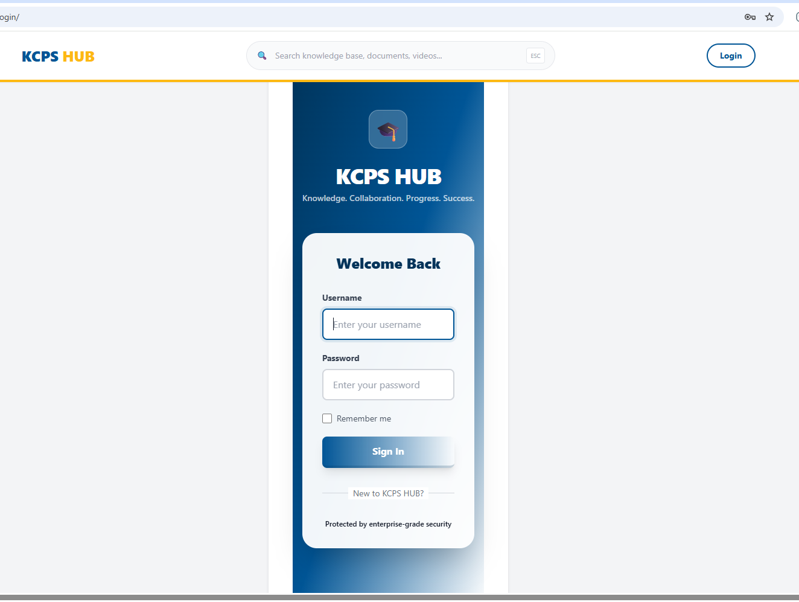
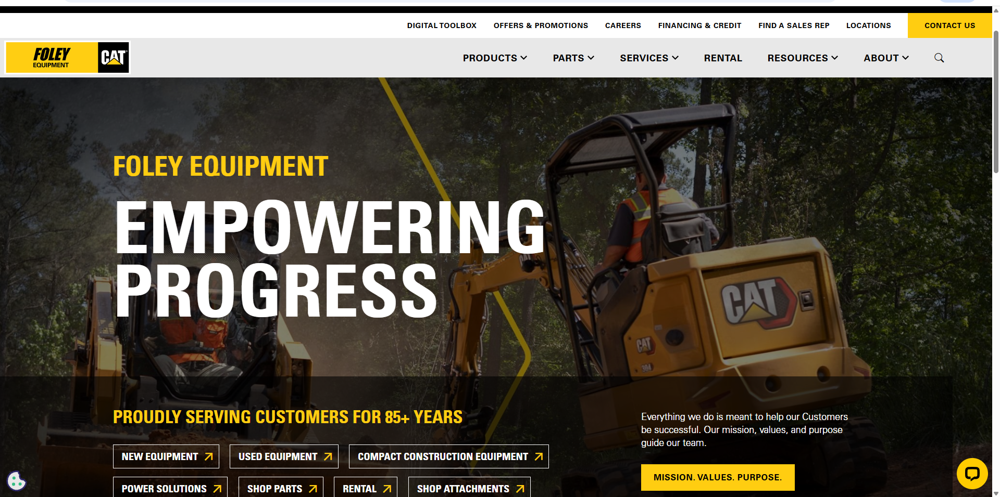
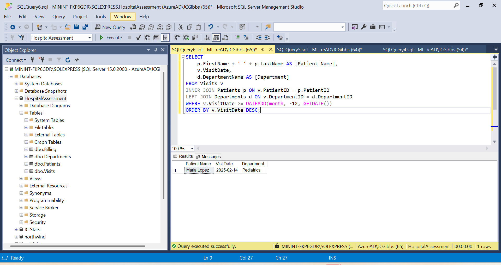
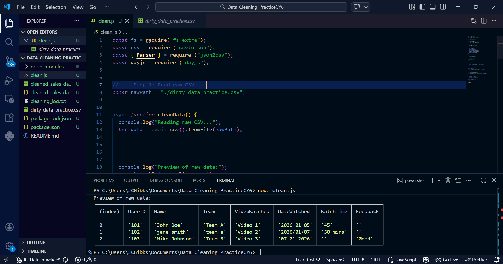
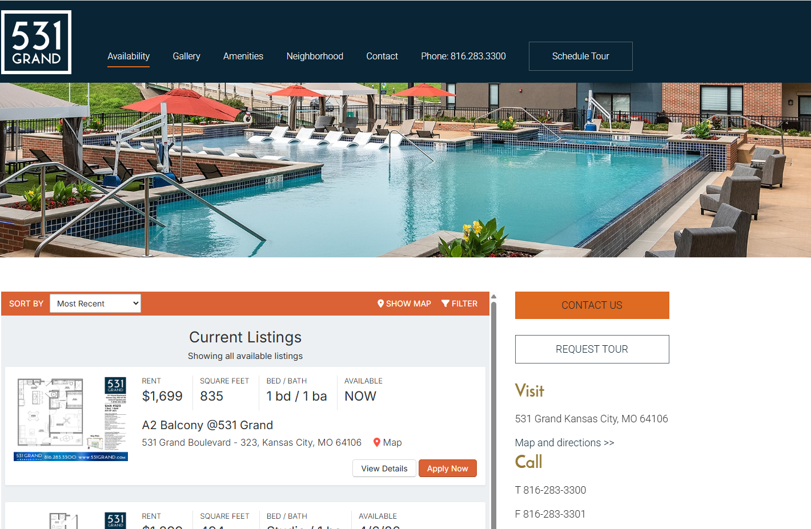

// Hello, World
Web Developer · Network Admin · Technology
Motivated and detail-oriented Applied Business and Technology student at Kansas State University, blending tech skills with real-world leadership experience. I bring entry-level expertise in network administration, back-end development, and site performance optimization — plus a decade of emergency medical services that built composure under pressure and decisive critical thinking.
Currently interning at IC Stars Kansas City, building web applications with SQL, JavaScript, Django, APIs, HTML and CSS. I'm passionate about using technology as a tool for community impact.

A web-based application built during IC Stars internship to solve a real client problem using Django, HTML, and CSS.

Front-end and back-end development for a digital platform, enhancing accessibility and performance.

Internal tool built to execute database queries and enhance site performance for business clients.

Manipulating and cleaning CSV files using JavaScript and JSON.

Front-end and back-end development for a digital platform, enhancing accessibility and performance.
Technology Management Option · Manhattan, KS
Cumulative GPA: 3.515 · Semester Honors (multiple terms)
I'm open to opportunities, collaborations, and conversations. Reach out!